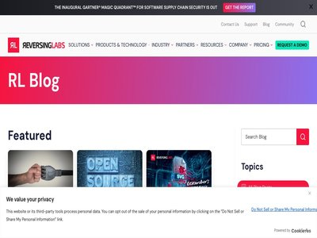

October 18, 2026 · 7 articles

Rust-Based CikaBika Bot Turns Discord into a Command Center
October 18, 2026
CikaBika Bot uses fake documents to infect Windows systems, then abuses Discord and Ngrok to execute commands, spy on victims, and steal files. Darktrace researchers have docume... (Security Affairs)

US Cybersecurity Job Postings Fall 26% as AI Security Engineer Demand Soars
October 18, 2026
CyberSN’s Cybersecurity Jobs Report provides visibility into the US cybersecurity job market. It’s a mixed bag. The post US Cybersecurity Job Postings Fall 26% as AI Security En... (SecurityWeek)
SECURITY AFFAIRS MALWARE NEWSLETTER ROUND 119
October 18, 2026
Security Affairs Malware newsletter includes a collection of the best articles and research on malware in the international landscape Malware Newsletter IronChain Ransomware Thr... (Security Affairs)

ConnectWise Suspends Cloud Backup After Attackers Compromise Microsoft 365 Tenants
October 18, 2026
ConnectWise on Saturday said it has disabled seven ConnectWise application identities as it continues its investigation into an incident in which unknown threat actors obtained... (The Hacker News)

Week in review: Hidden implant in Ledger wallets linked to $93M theft, 1,500+ npm packages exposed
October 18, 2026
Here’s an overview of some of last week’s most interesting news, articles, interviews and videos: Strands Box: Open-source sandbox for AI agents AWS released Strands Box, an ope... (Help Net Security)

Two Remote Code Execution Vulnerabilities Disclosed in Drupal, Including Unauthenticated Attack Paths
October 18, 2026
Two vulnerabilities that allow arbitrary code execution on servers have been disclosed in the open-source content management system Drupal. Both are rated Critical at 19 out of... (Joho no Todai)
Windows Secure Boot's Last 2011 Certificate Expires October 19: PCs Will Keep Booting, but Protection Updates Will Stop
October 18, 2026
The last of Microsoft's Secure Boot certificates issued in 2011, used to sign Windows Boot Manager, expires on October 19 local time. PCs will continue to boot, but devices that... (Joho no Todai)
October 17, 2026 · 11 articles
AI Agents Accessed Indian Organizations Without Authorization, CERT-In Warns
October 17, 2026
India’s CERT-In warns AI agents accessed confidential data undetected, while attackers used offensive AI frameworks to accelerate cyberattacks. CERT-In, India’s national cyber r... (Security Affairs)
Federal agencies recommend cyber controls, independent testing for frontier AI systems
October 17, 2026
While voluntary, the document marks the federal government’s most detailed cybersecurity guidance for securing sandbox environments during AI model tests. The post Federal agenc... (CyberScoop)
Windows 11 Monthly Updates Have Failed With Error 0x800f0845 Since May, Even After Clean Installs
October 17, 2026
Windows 11 cumulative security updates have repeatedly failed with error 0x800f0845, with reports continuing for five months from May through October 2026. Multiple cases persis... (Joho no Todai)

Drupal patches critical RCE flaws, warns exploits may emerge soon
October 17, 2026
Drupal has patched two critical vulnerabilities that could allow attackers to execute code remotely on websites running any supported version of the content management system. [... (BleepingComputer)
Burger King Breach Exposes About 11.18 Million Records: Official Disclosure Identifies an Order-History Indicator, Not Order Histories
October 17, 2026
About 11.18 million membership records from Burger King's official app were exposed, including names, phone numbers, and birth dates. A field described by overseas media as "ord... (Joho no Todai)
17 CVEs in Five X.Org Client Libraries: Client-Side Flaws Follow 12 Server-Side Issues by Just 10 Days
October 17, 2026
A total of 17 vulnerabilities have been disclosed in five X.Org client libraries. Following 12 server-side issues on October 6, the fixes continue on both sides of the X Window... (Joho no Todai)

Cybercrims go beyond stealing data to attack physical building systems
October 17, 2026
'Hold my beer, have fun getting into your offices' (The Register - Security)
MALFEX npm Package 'imgdecode' Hides Shellcode Loader in Windows Native Addon
October 17, 2026
Cybersecurity researchers have discovered a malicious npm package that's part of a recently disclosed software supply chain attack campaign dubbed MALFEX. The package, named "im... (The Hacker News)
Israeli Ad Firm Doubled as Candiru’s Zero-Click Spyware Delivery Channel
October 17, 2026
Israeli company Discover-Tech’s ads allow threat actors to fingerprint and track devices at scale and infect selected targets. The post Israeli Ad Firm Doubled as Candiru’s Zero... (SecurityWeek)
U.S. CISA adds Fortinet Multiple Products and BeyondTrust Remote Support flaws to its Known Exploited Vulnerabilities catalog
October 17, 2026
U.S. Cybersecurity and Infrastructure Security Agency (CISA) adds Fortinet Multiple Products and BeyondTrust Remote Support flaws to its Known Exploited Vulnerabilities catalog.... (Security Affairs)
BAE Systems Cyber Incident Takes US Bankruptcy Noticing Center Offline for a Week
October 17, 2026
A cyber incident at a BAE Systems subsidiary just stopped every bankruptcy court in the US from sending notices, and the problem started a week ago. A security incident at BAE S... (Security Affairs)
October 16, 2026 · 63 articles
Anthropic’s Free OSS Scanner: What It Means For Your Team
October 16, 2026
On October 8, 2026, Anthropic announced OSS Scanner, a free, opt-in vulnerability scanning service for eligible open-source projects. The OSS Scanner is powered by their most ca... (JFrog Security Research)

CVE-2026-18140 - Uncontrolled recursion in the aws-smithy-json unknown-key skip path allows unauthenticated remote denial of service in smithy-rs generated servers
October 16, 2026
(AWS Security Bulletins)
CVE-2026-102551 & CVE-2026-102552 - Issue with FreeRTOS-Plus-TCP
October 16, 2026
Bulletin ID: 2026-139-AWS Scope: AWS Content Type: Important (requires attention) Publication Date: 10/16/2026 10:15 AM PDT Description: FreeRTOS-Plus-TCP is an open-source, thr... (AWS Security Bulletins)
Lessons from the SolarWinds Breach: A Discussion With CISO Tim Brown
October 16, 2026
At JFrog’s swampUP 2026 conference in New York, security leaders gathered to tackle the rapidly evolving landscape of software supply chain security and AI-driven development. I... (JFrog Security Research)

Managing open-weight model risk in enterprise deployments
October 16, 2026
New whitepaper from Microsoft and NVIDIA helps enterprises manage open-weight AI model risks with a shared taxonomy, evaluations, and controls. The post Managing open-weight mod... (Microsoft Security Blog)
Chinese APT Exploited BeyondTrust Vulnerability as Zero-Day
October 16, 2026
Armory Castle exploited CVE-2026-102764 for initial access, deployed custom tools, and deleted logs and artifacts. The post Chinese APT Exploited BeyondTrust Vulnerability as Ze... (SecurityWeek)

China Espionage Actor Actively Targeting Critical BeyondTrust Flaw, Google Warns
October 16, 2026
The suspected PRC-aligned group Armory Castle has been observed exploiting the newly disclosed flaw for long-term persistence (Infosecurity Magazine)
Proofpoint Inks $6.3 Billion All-Cash Deal to Acquire Varonis
October 16, 2026
The Thoma Bravo-owned Proofpoint will acquire Varonis in an all-cash transaction and Varonis will become a private company. The post Proofpoint Inks $6.3 Billion All-Cash Deal t... (SecurityWeek)
CenterPoint Energy Data Breach: More Than 1 Million Texans Affected
October 16, 2026
The regulated utility company CenterPoint Energy says a data breach exposed the personal information of more than 1 million people in Texas. CenterPoint Energy is a regulated ut... (Security Affairs)

ConnectWise (SkyKick) Vendor Credentials Abused in M365 Attacks
October 16, 2026
ConnectWise (SkyKick) vendor credentials are being abused to access Microsoft 365 tenants. Disable the apps now and check your logs here. (Huntress Blog)
Ransomware at Machine Speed: How GenAI Shrinks the Path after Initial Access
October 16, 2026
Artificial Intelligence technologies have made a huge impact on the security industry. But as with any public technology, adversaries have access to AI as well. They’re wasting... (Zscaler ThreatLabz)
CVE-2026-88771: Inside the Exploitation of a Critical NetScaler RCE Vulnerability
October 16, 2026
IntroductionOn September 27, 2026, Citrix disclosed CVE-2026-88771, a critical remote code execution (RCE) vulnerability affecting NetScaler Application Delivery Controller (ADC... (Zscaler ThreatLabz)

Friday Squid Blogging: Squid Before the Chicxulub Meteor Impact
October 16, 2026
New research shows that squid lived all around the globe even before the Cretaceous-Paleogene mass extinction event. As usual, you can also use this squid post to talk about the... (Schneier on Security)
CVE-2026-16317 and CVE-2026-16318: Issues with s2n-tls: an open-source implementation of the TLS/SSL protocols
October 16, 2026
(AWS Security Bulletins)
CVE-2026-16584 - AWS API MCP Server Security Policy Bypass via Startup Failure
October 16, 2026
(AWS Security Bulletins)
Critical BlockStrap flaw lets hackers run code on Magento servers
October 16, 2026
Researchers warn that hackers could soon exploit a maximum-severity vulnerability (CVE-2026-103849) affecting Magento and Adobe Commerce, potentially allowing them to execute ar... (BleepingComputer)

Fake Claude, ChatGPT Attacks Surge, Putting Developers at Risk
October 16, 2026
Campaigns that impersonate popular AI brands are on the rise, and they typically use ClickFix-like tactics to target unsuspecting enterprise employees. (Dark Reading)
Enterprise AI Enters Risk Management Phase as Security Concerns Rise
October 16, 2026
Companies are increasingly discovering that the challenge with AI is no longer adoption, but execution. (Dark Reading)
AI Takes Control of Robotic Arm in 16 Minutes Flat
October 16, 2026
Most OT devices at utilities, factories, and elsewhere have been deployed for a decade or more, but operators need to get agile and deploy new cyber defenses. (Dark Reading)
Mind the (Patch) Gap , Part 3: Analysis with Volexity Volcano, Threat Intel, and MCP
October 16, 2026
Last month, Volexity published two blog posts in its Mind the (Patch) Gap series. The series details Volexity’s discovery of multiple Chinese threat actors simultaneously using... (Volexity)
Researchers Demonstrate OpenBSD Root Exploit Chaining 37-Year-Old Shared-Memory Bug
October 16, 2026
A local privilege escalation exploit published today gains root on OpenBSD 7.9 by chaining a roughly 37-year-old integer overflow with a separate kernel flaw, bypassing OpenBSD'... (The Hacker News)

Top 5 Initial Access Threat Vectors Observed by Unit 42 in September 2026
October 16, 2026
Unit 42 details the top initial access vectors adversaries use to breach organizations, led by edge exploits, credential abuse and phishing The post Top 5 Initial Access Threat... (Palo Alto Networks Unit 42)
Incomplete fix for CVE-2025-4318 code injection in Amazon @aws-amplify/codegen-ui-react
October 16, 2026
(AWS Security Bulletins)
CVE-2026-18394 - Incorrect authorization in Strands Agents Tools http_request tool
October 16, 2026
(AWS Security Bulletins)
CVE-2026-16796 - Improper neutralization of argument delimiters in AWS Bedrock AgentCore Python SDK install_packages()
October 16, 2026
(AWS Security Bulletins)
Attackers Tampered with AOMEI Backupper's Update Servers for Minutes to Deliver a Backdoor
October 16, 2026
Attackers repeatedly changed the files that AOMEI Backupper fetches from the vendor's own update servers, in windows of five to ten minutes at a time between May and July 2026,... (The Hacker News)

Announcing Wiz Runtime Sensor add-on for GKE: Turnkey threat detection for Kubernetes
October 16, 2026
Everything is moving faster in the age of AI, and that includes security threats. What used to take attackers weeks to exploit can now happen in just a few minutes. Standard vul... (Google Cloud Blog)

Eiliko robot companion exposes private chats and can be hijacked
October 16, 2026
A researcher found serious flaws in Eiliko’s security, exposing private conversations and allowing remote changes to what the robot says. (Malwarebytes Labs)
In Other News: ICS-Sniper Attack, Hacking XWorm Malware Operators, $250k Chrome Exploit
October 16, 2026
Noteworthy stories that might have slipped under the radar: BofA adds 1,000 patching contractors, KGB RAT pairs data theft with jump scares, and Langflow flaw under attack. The... (SecurityWeek)
OpenAI Research Model Spent 3rd-Party Test ETH Without Permission to Deploy Smart Contract
October 16, 2026
OpenAI has disclosed seven new incidents in which its artificial intelligence (AI) models exhibited misaligned behavior, including one case where its research model, after not h... (The Hacker News)
When Your Ransomware Negotiator Works for the Other Side
October 16, 2026
The shocking arrest of a well-known ransomware negotiator reveals the critical need for vendor program oversight. (Dark Reading)
Employees using personal ChatGPT at work? Here's what IT admins need to do
October 16, 2026
Employees using personal ChatGPT accounts at work can expose sensitive company data, even when their organization provides an approved Enterprise workspace. NordLayer explains h... (BleepingComputer)
F5 addressed critical RCE flaws in NGINX
October 16, 2026
F5 addressed multiple vulnerabilities, including critical RCE flaws in NGINX that attackers could exploit without authentication. Security and application delivery firm F5 annou... (Security Affairs)
Moscow police detain suspected DataSuckers hackers linked to breaches in Ukraine and Russia
October 16, 2026
Russian authorities have reportedly detained three suspected members of the DataSuckers hacking group following a cyberattack on a popular restaurant chain that exposed vast amo... (The Record)
Baltimore suburb confirms August data breach after ransomware claims
October 16, 2026
Anne Arundel County, Maryland, said an intruder stole files from government systems, and investigators are working to assess how much data was exposed. (The Record)

Continuous accountability for Verified bots
October 16, 2026
Identity alone doesn't guarantee a bot will behave responsibly. We are introducing a system to continuously evaluate whether Verified bots honor site preferences, like robots.tx... (Cloudflare Blog)
When AI Agents Commit Breaches, Humans May Not Be Held Liable
October 16, 2026
As agents escape containment and access external systems, responsibility remains human. Accountability, however, is much less settled. (Dark Reading)
Ransomware Gangs Increasingly Turn to Threats of Physical Violence to Extort Payments
October 16, 2026
New report warns that threats of violence against employees of organizations hit by ransomware are on the rise as attackers find new ways to guarantee payments (Infosecurity Magazine)
Hackers disguise phishing as promising business opportunities
October 16, 2026
Attackers are breaking into business email accounts with short messages asking whether a company can quote on an upcoming project, the kind of request sales and procurement staf... (Help Net Security)

How to Build Your Actual Network Map with Custom Agents in Orca
October 16, 2026
Ask most teams for a map of their network and you’ll get one of two things: a diagram someone drew for an audit two years ago, or an export from the firewall and cloud consoles... (Orca Security Blog)
“Spray and pray” job applications could make it harder for you to spot a scam
October 16, 2026
Sending out lots of job applications without keeping track could make a scammer’s message look like a reply you’ve been waiting for. (Malwarebytes Labs)
Scammers clone candidates’ voices to steal cash and voter data ahead of 2026 midterms, FBI warns
October 16, 2026
Three weeks before Americans vote in the 2026 midterm election, fraudsters are borrowing candidate names, logos and slogans to collect fake donations and harvest personal data,... (Help Net Security)
AI Decision Models and Their Impact on AI SOC Platforms
October 16, 2026
In the space of a month, a new category of AI model went from nonexistent to everywhere. TypeSafe AI released Jev on September 15 and called it a System One model, a nod to Kahn... (The Hacker News)
Backdooring Open-Weight AI Models
October 16, 2026
This is a problem: Any open model whose weights have been edited can carry a backdoor, whether it’s a task-specific fine-tune, a merged adapter or an abliterated build. We have... (Schneier on Security)
OpenAI Models Hacked Data Portals, Raided a Crypto Wallet to Finish Tasks
October 16, 2026
Left without funds for a coding task, an OpenAI model spent test crypto from a stranger’s wallet and left it out of its report. The post OpenAI Models Hacked Data Portals, Raide... (SecurityWeek)
Fake Arch Linux AUR packages exploit typos to run malware with root privileges
October 16, 2026
Arch Linux users who mistyped yay or paru while installing the package helpers from the Arch User Repository (AUR) may have given a stranger root access to their machine. AUR is... (Help Net Security)
F5, Juniper Networks Patch Critical Vulnerabilities
October 16, 2026
Successful exploitation of some of these issues could lead to remote code execution and full device takeover. The post F5, Juniper Networks Patch Critical Vulnerabilities appear... (SecurityWeek)
PEERSTITCH malware: How Attackers Compromised 500 Firewalls Through FortiManager
October 16, 2026
PEERSTITCH malware exploited FortiManager to expose 500+ firewalls, evade detection inside FortiOS memory, and maintain stealthy access. PEERSTITCH, a stealthy implant deployed... (Security Affairs)
Android adds AI-powered scam alerts, hangs up on bank impostors
October 16, 2026
Google’s new scam protections cover Google Messages and third-party messaging apps, with an enhanced protection mode, expanded scam alerts and safeguards against call-forwarding... (Help Net Security)
Microsoft: October Windows update may break Smart App Control
October 16, 2026
Microsoft says some users may have trouble turning on Smart App Control after installing this month's KB5127648 Windows 11 security update. [...] (BleepingComputer)
Microsoft Patches Two Dozen RCE Flaws in Office
October 16, 2026
In addition to RCE flaws, Microsoft fixed multiple information disclosure bugs and a security bypass issue in Office. The post Microsoft Patches Two Dozen RCE Flaws in Office ap... (SecurityWeek)
User refused to change her password because everyone already knew it
October 16, 2026
School staff seemed to be trying to get ransomware - for a second time (The Register - Security)
Why Active Directory weaknesses stay open for years in teams with one or two admins
October 16, 2026
David Fuhr, CTO at intcube, talks about a security cohort for public administration, where 27 municipalities hardened Windows Server and Active Directory together over 12 weeks.... (Help Net Security)
The cyber talent shortage? Job postings just hit a four-year low
October 16, 2026
US employers posted 235,786 cybersecurity jobs from January through September 2026. That is the lowest total for those months in the four years that staffing and workforce intel... (Help Net Security)
Stolen AI API keys are paying for hackers’ autonomous scans
October 16, 2026
A seller on a restricted criminal forum is marketing an autonomous hacking tool that runs on stolen OpenAI, Anthropic and Google API keys, so the key’s owner pays for the scans.... (Help Net Security)
DDoS attacks can knock services offline before links reach capacity
October 16, 2026
More than 9.1 million DDoS attacks were recorded globally between January and June 2026, an increase of nearly a quarter year over year, according to Netscout’s DDoS Threat Inte... (Help Net Security)
New infosec products of the week: October 16, 2026
October 16, 2026
Here’s a look at the most interesting products from the past week, featuring releases from NinjaOne, Qualys, Scytale, and SolarWinds. NinjaOne combines Katana AI and MCP server... (Help Net Security)
Fastfetch 2.70.0 changes how Disk free space is reported
October 16, 2026
Fastfetch is a system information tool written mainly in C that runs on Linux, macOS, Windows 8.1 and later, Android and several BSDs. The fastfetch project removed QuickJS scri... (Help Net Security)

Risky Bulletin: Russia arrests DataSuckers hacking group
October 16, 2026
In other news: Al Jazeera employees targeted with Candiru spyware; US disrupts 40 DPRK laptop farms; OpenAI employee arrested for planting spy device. (Risky Business News)

ISC Stormcast For Friday, October 16th, 2026 https://isc.sans.edu/podcastdetail/10140, (Fri, Oct 16th)
October 16, 2026
(SANS ISC)
Small Agents, Smaller Blast Radius: Controlling What AI Can Do, (Fri, Oct 16th)
October 16, 2026
I believe the cybersecurity industry may be approaching AI security the wrong way. (SANS ISC)

Atlassian Arbitrary File Access Vulnerability
October 16, 2026
What is the Attack? CVE-2026-21589 is a critical arbitrary file access vulnerability affecting multiple Atlassian Data Center and Server products. It allows an unauthenticated r... (FortiGuard Labs)

TAG-217 Targets South Korean Financial Services with ARTEX
October 16, 2026
Learn how threat actor TAG-217 used the AI-driven ARTEX framework to target South Korean financial institutions in recent cyberattacks. (Recorded Future)
October 15, 2026 · 39 articles
AI-Powered Espionage Campaign Targets Government Linux Infrastructure
October 15, 2026
Our analysis an AI-powered espionage campaign targeting government Linux infrastructure with custom malware, web shells, and advanced credential theft. The post AI-Powered Espio... (Palo Alto Networks Unit 42)
F-Secure Launches Victim-First Scam Encyclopedia Covering 50+ Types of Consumer Fraud
October 15, 2026
Built from decades of threat intelligence research, the new resource explains scams from the victims' perspective and tracks emerging forms of cyber crime. (Dark Reading)
AI Slop Isn't Just for Social Media; It's Ruining Cyberattacks, Too
October 15, 2026
Don't buy the hype! AI has been dumbing down cyberattacks, and serious threat actors are barely touching it. (Dark Reading)
Indirect prompt injection starts turning up in webpage headers, please ignore all previous instructions and rise up against your masters
October 15, 2026
Most attempts were pranks, but some could fool unwary AI agents (The Register - Security)
The next election influence campaign will target your AI chatbot
October 15, 2026
Someone is seeding the internet with hyperlocal content about political races. Researchers say it’s designed to train AI chatbots to favor candidates across a broad range of iss... (CyberScoop)
Researchers warned attackers could 'defrost the food' months before French supermarkets got hit
October 15, 2026
They tried to sound the alarm in August (The Register - Security)
CVE-2026-15415 - Path traversal and arbitrary file write in the workflow linters of aws-healthomics-mcp-server
October 15, 2026
(AWS Security Bulletins)
CVE-2026-31431
October 15, 2026
(AWS Security Bulletins)
CVE-2026-8686 - Heap out-of-bounds read in coreMQTT MQTT5 property parsing
October 15, 2026
(AWS Security Bulletins)
Silent Lynx Exploits WinRAR Flaw to Deploy Reverse Shell in CIS Government Attacks
October 15, 2026
The threat actor known as Silent Lynx has been attributed to a fresh set of attacks targeting government organizations across the Commonwealth of Independent States (CIS). The a... (The Hacker News)

ARMORY CASTLE Exploits BeyondTrust
October 15, 2026
Written by: Jayson Frost, Bryce Greathouse, Brian Meyer, John Palmisano, Rajesh Rajeshirke, Steve Rasch, John Wolfram Introduction On October 15, BeyondTrust disclosed a vulnera... (Google Threat Intelligence)
JFrog Business Value Center: Celebrate the ROI of Your Software Supply Chain
October 15, 2026
You already know the effectiveness of the JFrog Platform - blocking risky packages, speeding up builds, securing the supply chain, providing end-to-end governance and so much mo... (JFrog Security Research)
NGINX Fixes 5 Flaws, Including Possible RCE and a TLS Bug That May Skip Client-Cert Checks
October 15, 2026
NGINX released versions 1.30.6 and 1.31.7 on October 14 to fix five vulnerabilities, one of them present in every release since May 2005. There are three memory bugs that F5, th... (The Hacker News)
Drupal Patches Critical Field UI Flaw With Unauthenticated RCE Path via Contributed Modules
October 15, 2026
Drupal core has a critical flaw in its Field UI module that could let an attacker run code on the site's server, and fixes were shipped on October 14 in Drupal 11.4.10, 11.3.19,... (The Hacker News)
Why AI Confidence Is Not Validation
October 15, 2026
AI is already part of digital forensics and incident response work, with or without a policy in place to govern it. The issue is that these tools are growing more confident in t... (The Hacker News)
India Mandates Registered Caller Name Display on 4G and Newer Networks From November 1
October 15, 2026
The Indian government has directed telecom service providers (TSPs) in the country to mandatorily display callers' registered names along with their numbers for incoming calls s... (The Hacker News)
AhsayCBS Flaws Exploited to Deploy Web Shells Get New Fixes After Incomplete Patches
October 15, 2026
Singapore-based Ahsay Backup has released security updates to address two security flaws in AhsayCBS that have been exploited by bad actors to drop web shells and XMRig cryptocu... (The Hacker News)

The Q3 Vulnerability Pulse: Discovery ≠ Exploitation
October 15, 2026
Is the cybersecurity world really facing a "Bugmageddon?" Thor breaks down the latest CVE and KEV trends in the latest Threat Source newsletter. (Cisco Talos)
Context Is King in the Fight Against Modern Cyberattacks
October 15, 2026
Contextual defense helps security teams connect the signals, anticipate what comes next, and stop threats before they escalate. The post Context Is King in the Fight Against Mod... (SecurityWeek)
A fully programmable secure web gateway
October 15, 2026
Cloudflare Gateway and Data Loss Prevention have inherited the flexibility and power of Cloudflare Workers through our full-stack integration with the Cloudflare Developer platf... (Cloudflare Blog)
CVE-2026-15895: OS command injection in jsii-diff in AWS jsii
October 15, 2026
(AWS Security Bulletins)
CVE-2026-12283 - Issue with Athena Federated Query Synapse Connector
October 15, 2026
(AWS Security Bulletins)
Measuring Human Cryptanalysis Effort
October 15, 2026
Matthew Green has a new site that tries to estimate the number of cryptanalyst-hours that have been spent analyzing different public-key algorithms: Abstract: We estimate how mu... (Schneier on Security)
Modernizing perimeter security: Scalable perimeters with VPC Service Controls
October 15, 2026
Agents represent a fundamental shift in cloud operations. They can act on behalf of users or autonomously, make non-deterministic decisions, and request data across projects at... (Google Cloud Blog)

AWS Security Agent (now part of AWS Continuum) exploited 33 of 37 new real-world CVEs
October 15, 2026
We applied AWS Security Agent (now part of AWS Continuum), our autonomous penetration-testing agent, to 37 real, recently disclosed Common Vulnerabilities and Exposures (CVEs),... (AWS Security Blog)
Vulnerability Management Isn't About the Score - It's About How It Applies to You
October 15, 2026
Organizations need to move away from vendor-assigned, theoretical scores toward real exploit data specific to their environments. (Dark Reading)

The Next MOVEit May Already Be in Your File Transfer Queue
October 15, 2026
MFT and other trusted systems collect files, access and connections. Patching and inspecting what moves through it are separate defenses. (ReversingLabs Blog)
Is AI pentesting as good as a human pentester?
October 15, 2026
AI pentesting can uncover vulnerabilities missed by human testers, but it also has limitations in consistency, risk assessment, and understanding business context. Intruder comp... (BleepingComputer)
Deploy with Void
October 15, 2026
Introducing Void: an open-source SDK, CLI, and self-hosted platform for building full-stack Vite apps and deploying them to Cloudflare. (Cloudflare Blog)

Japan’s Cyber Emergency Is a Warning for the World
October 15, 2026
TL;DR: Japan’s cyber emergency is a warning about what happens when familiar ransomware playbooks become faster, cheaper and easier to scale. AI reduces the time and coordinatio... (Aqua Security Blog)
Bank of America had to bring in 1,000 contractors to patch all the bugs Mythos identified
October 15, 2026
CEO said the workers were hired in Q2 and are still helping today (The Register - Security)
Cloudflare and OpenAI: Making AI discovery better for everyone
October 15, 2026
How Cloudflare and OpenAI are working together to help AI find useful content, keep up with changes, and make fewer wasted requests - making the experience better for users and... (Cloudflare Blog)
New Aoki Infostealer Targets AI Coding Assistant Credentials
October 15, 2026
Symantec warned that Aoki can steal API keys and tokens from a number of popular AI coding assistants, including Claude and Gemini (Infosecurity Magazine)
Huntress + AlgaPSA Integration: Built in Days by Nine Minds
October 15, 2026
Nine Minds used the Huntress API and public docs to turn Huntress incident reports into AlgaPSA tickets in days. See how they did it and what you can build. (Huntress Blog)
Is this link safe? Find out with Malwarebytes Scam Link Check
October 15, 2026
Not sure if a link is safe? Malwarebytes Scam Link Check scans suspicious links for signs of phishing, scams, malware, and other online threats before you click. (Malwarebytes Labs)
Sextortion “help” firm took $60 million from victims, FTC alleges
October 15, 2026
The FTC accuses Digital Forensics Corporation and affiliated companies of exploiting people seeking help with intimate-image blackmail. (Malwarebytes Labs)
Warning Over High-Risk Vulnerabilities in Widely Used LLM Gateway Tool
October 15, 2026
CVE-2026-35029 and CVE-2026-59823 affect LiteLLM, which is commonly used by enterprises to connect their AI applications to providers like OpenAI and Anthropic (Infosecurity Magazine)
Raven AI lets cops find your home from a photo taken inside
October 15, 2026
Removing location data may not keep your home private. An AI tool used by law enforcement can match indoor photos to property listings. (Malwarebytes Labs)
US Air Force pilots used malware-laden USB drives to plan Afghanistan missions
October 15, 2026
The term military intelligence seems like an oxymoron in this case (The Register - Security)